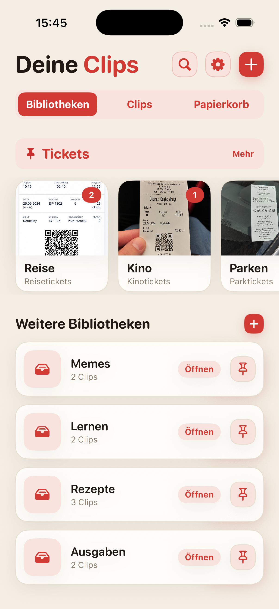
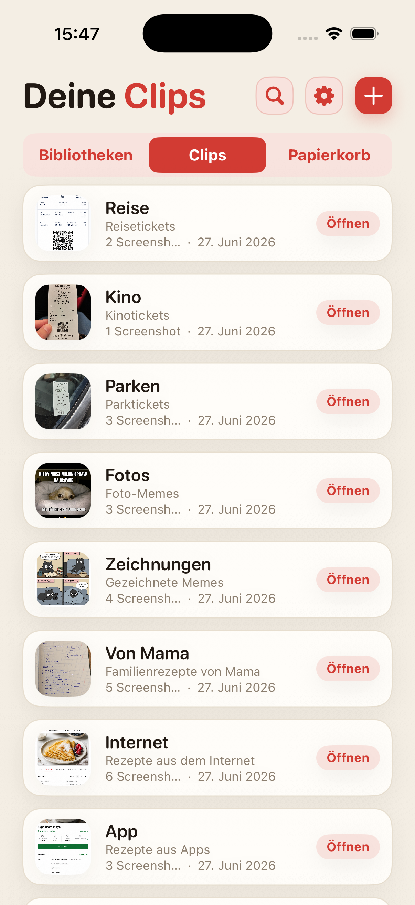
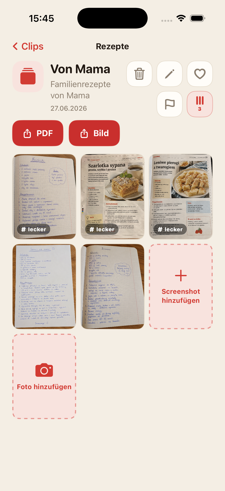
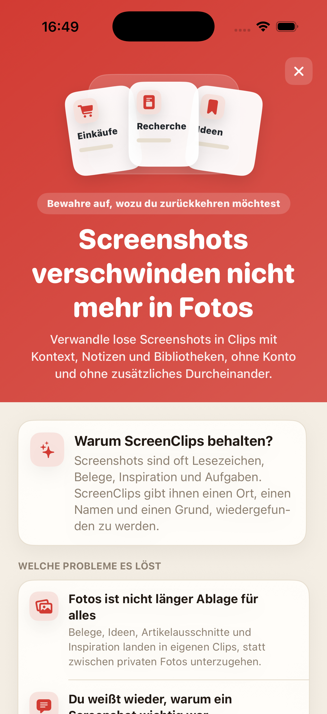

Screenshots verschwinden in der Masse
Du speicherst etwas Wichtiges und wischst eine Woche später durch die Mediathek, als würdest du Beweismaterial sichten.
Mach aus losen Screenshots Clips mit Namen, Notiz und eigener Bibliothek. Ohne Konto, ohne Cloud und ohne diese endlose Suche in der Mediathek.

Belege, Rezepte, Tickets, Ideen und Artikelausschnitte landen zwischen Selfies, Memes und zufälligen Aufnahmen. Man hat die Cloud erfunden und sucht trotzdem den Screenshot mit der Hoteladresse.
Du speicherst etwas Wichtiges und wischst eine Woche später durch die Mediathek, als würdest du Beweismaterial sichten.
Ein Bild allein reicht oft nicht. ScreenClips gibt jedem Clip einen Namen und eine Notiz.
Einkäufe, Arbeit, Reisen und Lernen brauchen eigene Orte, nicht einen einzigen Stapel in Fotos.
Trenne Themen wie Rezepte, Belege, Tickets, Recherche, Lernen oder alles andere, das nicht wieder verschwinden soll.
Ein Clip bündelt alles zu einer konkreten Sache. Er hat einen Namen, eine Beschreibung und die passenden Screenshots.
Bibliothek öffnen, Clip auswählen, Material wiederfinden. Ohne Mediathek-Marathon.

ScreenClips versucht nicht, für dich zu raten. Die App gibt dir eine einfache Struktur: eine Bibliothek fürs Thema, einen Clip für die konkrete Sache, Screenshots und Fotos darin.
Sammle Material in Clips und ergänze es, wenn das Thema wächst.
Mach aus einem Clip eine lesbare Datei, wenn du etwas teilen oder außerhalb der App behalten möchtest.
Favoriten, Markierungen und Ordnung dort, wo vorher nur Scrollen und leises Seufzen war.

ScreenClips funktioniert lokal. Du brauchst kein Konto, um Ordnung zu schaffen, und musst Belege, Notizen und Pläne nicht an den nächsten Dienst abgeben, der angeblich nur dein Erlebnis verbessern möchte.
Premium macht die App nicht komplizierter. Es gibt dir mehr Raum für Bibliotheken, Clips und Screenshots. Der Preis steht im App Store.
Laden imApp Store
Nein. Wenn du ein Bild aus einem Clip entfernst, bleibt das Original in Fotos erhalten.
Ja. ScreenClips ist als lokaler Organizer auf deinem iPhone gedacht.
Nein. ScreenClips braucht kein Konto, um deine Clips zu organisieren.
Ja. Du kannst Screenshots und Fotos hinzufügen, wenn sie zu einem Clip gehören.
ScreenClips organisiert die Dinge, die du dir „für später“ speicherst. Diesmal ist später wirklich auffindbar.
Laden imApp Store